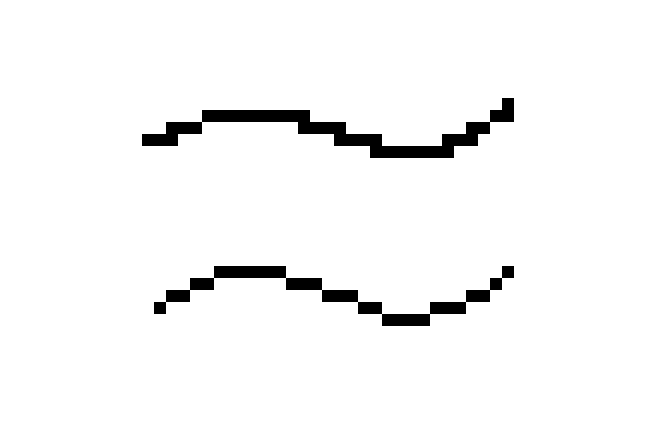
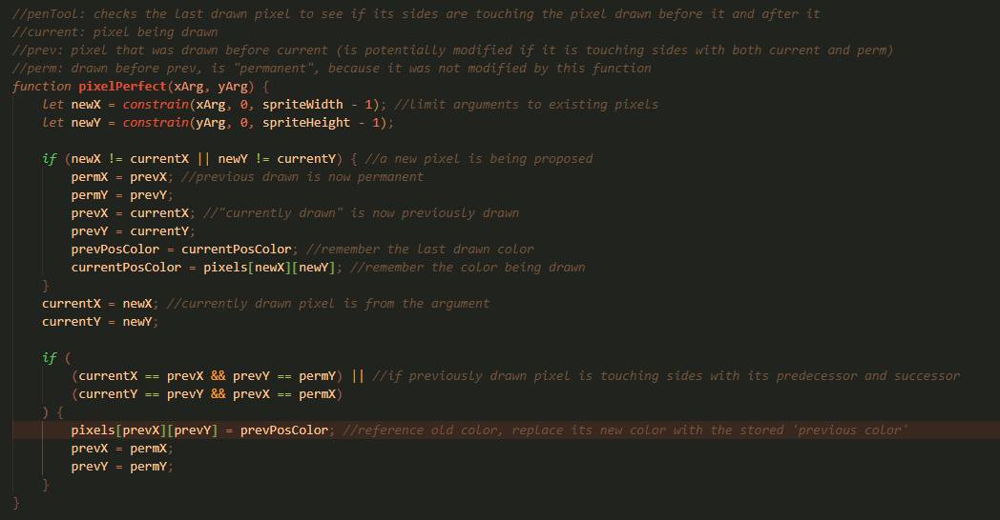
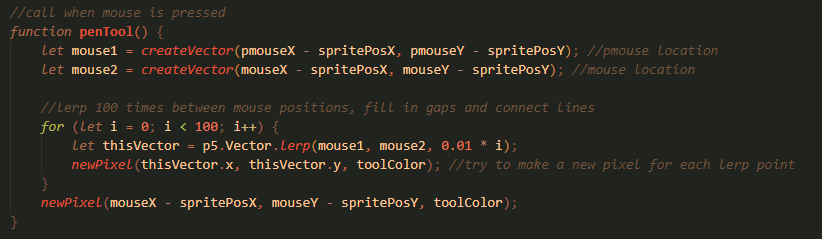

This project is inspired by pixel-sprite drawing applications like 'Aseprite' and 'Flipnote Studio' on the Nintendo DSi. I wanted to recreate a desirable feature of aseprite, the "Pixel-perfect" setting. With this setting, users are able to draw clean pixel lines.
(A normal pixel line compared with a pixel-perfect line)
This application works best in full-screen, so it is linked externally.
(The code for the pixel-perfect function used in this project)
(The code for the pen-tool, which addresses the issue of gaps in a drawn stroke)